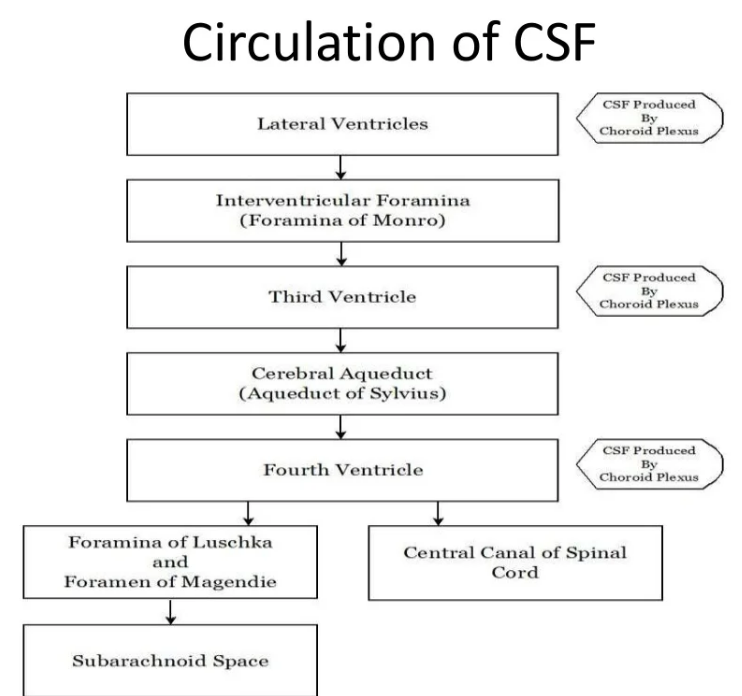
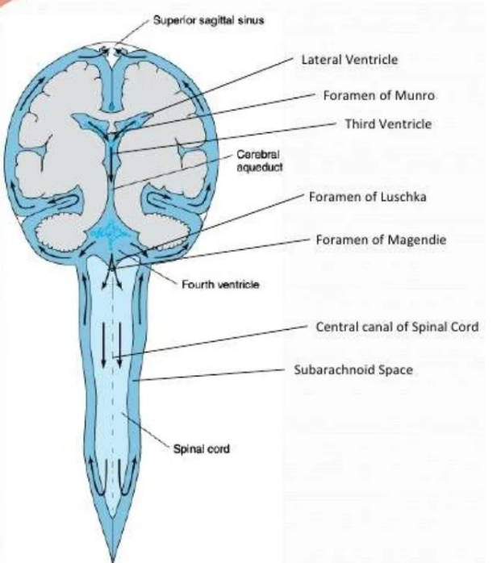
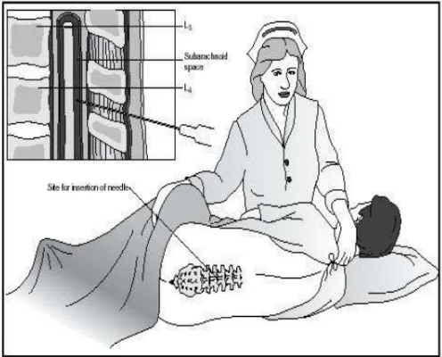
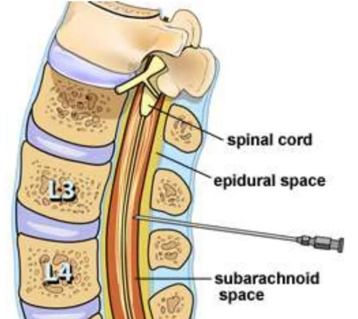
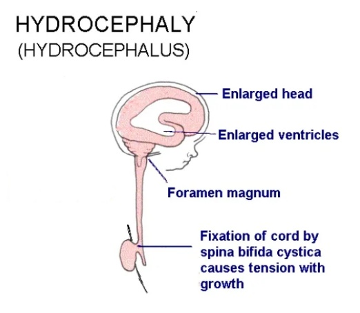

INTRODUCTION:-
- Extracellular Fluid
- Clear,colorless and transparent
- Circulates in:
- Ventricles of brain
- Subarachinoid space
PROPERTIES:-
- Volume : 150ml(100-200ml)
- Rate Of Formation : 0.3ml/min
- Specific Gravity : 1.005
- Nature : Alkaline
COMPOSITION:-
Water :
99.13%
Solid :
0.87%
- Organic Substances:-
- Proteins
- Amino-Acids
- Sugar
- Cholestrol
- Urea
- Uric Acid
- Creatinine
- Lactic Acid
- Inorganic Substances:-
- Sodium(Na)
- calcium(Ca)
- Potassium(K)
- Magnesium(Mg)
- Chlorides(xCl)
- Phosphate(xPO₄)
- Bicarbonates(xHCO₃)
- Sulphate(xSO₄)
FORMATION OF CSF:-
-
Site Of Formation:-
-
Mechanism Of Formation:-
- Secretion occurs by Active Transport Mechanism
- Not involved Ultra-filtration.
-
Substances Affecting CSF Formation:-
- Pilocarpine,Ether Or Extracts Of Pituitary Gland
- Inj. Of Saline:
- Isotonic Saline » stimulate normal secretion
- Hypotonic Saline » increase CSf formation
- Hypertonic Saline » decrease CSF formation
CIRCULATION OF CSF:-
FLOW CHART:


ABOSORPTION OF CSF:-
- Mostly By Arachnoid Villi - Into the Subdural Venous Sinus & Spinal Veins.
- Small Amount By Perineural Spaces - Into Cervical lymphatics & Perivascular Spaces.
- Normally, 500ml of CSF is formed everyday amd an equal amount is absorbed.
FUNCTIONS OF CSF:-
-
Mechanical :
- Protective
- Nourishment
- Require In Cerebral Blood Flow
-
Therapeutical :
- Needed for Administration Of Drug
- Lumbar Puncture
Main Functions:-
-
Protects Brain From Mechanical Injury:
- Effect Of Buoyancy-Brain has higher specific gravity then CSF.Therefore,Brain floats freely in the CSF.
- Brain weighs about 1400g in air, but only 50g in CSF.
- Protection from minor injuries i.e. routine activities.
- Impact of major injuries greatly diminished.
-
Cushion Effect:
- CSF supports the brain;cushion-like effect.
- Post lumbar puncture-Severe headache after CSF removal-Brain hangs on vessels,nerve roots & traction on them stimulates pain fibers.
-
Provides MIcroenviornment for Brain Cells:
- Serves as buffer solution for blood and brain interstitial fluid.
- Ensures constancy in the external envionment of neurons.
-
Excretion:
- Removal of proteins and waste products of metabolism.
- Lymphatics absent in brain & spinal cord.
- CSF serves the function of lymphatics.
APPLIED PHYSIOLOGY:-
-
LUMBAR PUNCTURE:
- Process by which CSF is taken out from spinal subarachnoid space for study.
- An LP needle is introduced usually btw 3rd & 4th lumbar spines with subject lying on his side.


- Study the sample-CSF analysis
- Drug delivery. ex:anasthetics
-
HYDROCEPHALUS:
- Pathological accumulation of CSF within brain spaces.

-
Types:-
- Communicating (External):Excess fluid in subarachnoid space - cause - rate of formation greater then absorption.
- Non-Communicating (Internal):Excess fluid accumulation in ventricular system proximal to block.
-
Common Sites Of Block:-
- Foreman Of Munro
- Foreman Of Luschka
- Aqueduct Of Sylvius
- Within Ventricular System Itself